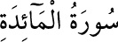

5- MÂİDE SÛRESİ
Mâide sûresi 120 âyettir. “Bugün sizin dîninizi ikmâl ettim.” meâlindeki üçüncü
âyeti hâriç tamâmı Medîne’de hicrî altıncı yılda nâzil olmuştur.
Hz. İsa zamanında, gökten indirilmesi istenen bir sofradan bahsedildiği için
sûreye bu isim verilmiştir.
Münafıklar, ehl-i kitap ve hıristiyanlardan bahsedilir. Hac, abdest, gusül ve
teyemmüm ile ilgili meseleler, içki ve kumar yasağı, ahitlere ve söze bağlılık,
ictimâî ve ahlâkî münasebetler, haram ve helal yiyecekler gibi bilgi ve hükümlere
temas edilir.